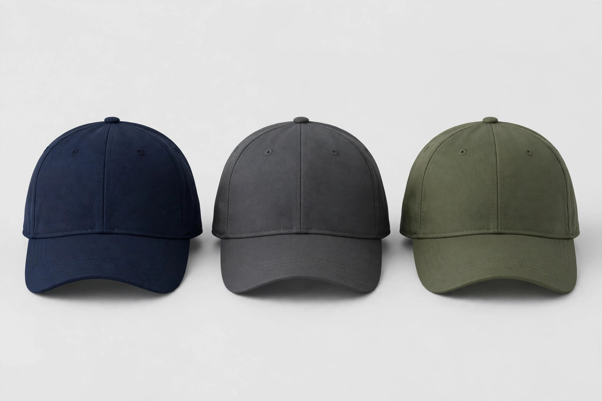

There is no place to hide a mistake on a cap. A jacket has lining, a hoodie has a pocket, a tee has a print big enough to distract the eye. A cap is six panels of cloth and a brim, and every stitch is on show. Put a bad cap next to a good one and anyone can tell in three seconds, even if they cannot say why. That is the first thing to understand about ordering custom caps, and it is why this guide, from a custom cap manufacturer in Sialkot, Pakistan, works through the cap piece by piece instead of starting with prices. We make baseball caps, trucker caps and five-panels for small brands every week, to the buyer's own design. This guide walks through the places where orders go wrong, in the order we check them on the cutting table.
Most buyers start by choosing a colour. We start by choosing a shape. The rest of this guide follows that order: crown, fabric, brim, decoration, then the back of the cap. If you already have a design, read the decoration section first, because that decision quietly limits all the others.

A cap is six panels, a brim and a button
Count the parts on any cap and you get the same short list: the crown, panels sewn together; a small fabric-covered button where they meet at the top; the brim; eyelets; a sweatband inside; and a closure at the back. Six panels is the standard baseball cap. Five panels give a flatter front, and a trucker cap keeps a foam front and swaps the back panels for mesh. None of these is better in general. Each one suits a different design, and the wrong choice shows up immediately, usually in the embroidery. A tall logo sent for a low-profile five-panel has to shrink to fit, and a shrunken logo looks like an afterthought. So before fabric, before colour, settle the shape. It takes one message to confirm, and it saves a sample.
The crown is the fit
Two words decide how a cap sits on a head: structured and unstructured. A structured crown has a stiff layer, called buckram, sewn into the front panels, so the cap holds its shape unworn. An unstructured crown has no stiffening, so it sits softer and lower, the way a washed-out dad cap does. In our experience most buyers get this decision backwards. They choose the fabric first and then ask for a tall structured front the fabric cannot hold. Choose the profile first. Low profile sits close to the head. Mid profile is the standard baseball cap. High profile stands tall, and it carries a big embroidered logo without crowding it. Once the profile is set, the fabric's job is clearer. A structured high profile in light, soft cotton will still slump, because the cloth is doing work the buckram should be doing. Get the structure right and the cap keeps its shape for years. Get it wrong and no fabric saves it.
Twill, wool, mesh: the fabric shortlist
The list is short, which is good news. Cotton twill does most of the work in this trade. It takes dye evenly, holds embroidery well, and comes in the weights a cap needs. Wool, usually melton or a wool blend, is the winter choice, warm and a little heavier, and it suits a structured crown. Polyester is the performance choice, light and quick to dry, and the only fabric that takes sublimation printing properly, so a full-colour photograph across the front panels decides the fabric for you. Mesh lives at the back of a trucker cap, where it keeps the head cool, and its colour should sit close to the front colour, or the cap looks like two caps sewn together.
The brim gives the cheap ones away
Bend the brim gently. A good one springs back flat. A bad one keeps a wave, or a crease that never comes out. The brim is a sandwich: cloth top and bottom, a stiff board in the middle, and six to eight rows of stitching following the curve. The board is where cheap caps cut corners, because nobody sees it until the brim goes soft at the edges after a month of wear. Pre-curved is the standard. Flat is the streetwear choice, and it curls at the corners within a week if it is not stitched well. A sandwich brim, two colours with a thin stripe at the edge, makes a cap look finished and costs almost nothing to add at the order stage. Adding it later means remaking the brim. The stitching tells the rest: even spacing, no skipped stitches, no thread ends at the edge. Run your thumb along the underside of the brim when the sample arrives. If the stitching catches, your customers will feel it every time they put the cap on.
Pick the decoration before you pick the fabric
This is the decision that quietly limits everything else, so make it early. Embroidery is the standard for caps, and it comes in two kinds. Flat embroidery sits close to the cloth. Three-dimensional puff embroidery stands up from it, the raised lettering on most sports caps, and it needs a structured crown with buckram behind it and a design simple enough to read at a distance. Fine detail disappears in puff embroidery. Most buyers get this wrong: they send the artwork they use on a tee and expect it to work on a front panel four inches wide. It will not. Simplify the logo, or move the detail to a woven label inside the cap.
Printing works where embroidery cannot, a full-colour image or a gradient, but screen printing on a curved crown is limited and sublimation needs polyester, so the fabric decision follows the decoration decision. Patches are the third option, leather, rubber or woven, sewn or heat-pressed onto the front, and they suit a design too detailed to stitch. A patch can also rescue a front panel that would not take embroidery well. Send the artwork as a vector file if you have one. A clear JPEG works. A screenshot from a phone does not.
Two minutes with a sample cap
I check every sample cap the same way, and it takes about two minutes. I bend the brim and let it spring back, then pull the closure to its tightest and loosest to make sure it holds at both ends. I turn the cap inside out and look at the sweatband, because that is the part that touches the customer's forehead all day, and I run my thumb along the inside seams, where a rough edge hides. Then I look at the embroidery backing from the inside, because a customer never sees it but feels it if it is stiff or scratchy. The front of a cap is for the brand. The inside is for the person wearing it, and that is what decides whether they wear it twice. I do this on the sample, and again on the first piece out of the run. A cap that passes in my hands usually passes everywhere else.
The trucker cap that taught us about mesh
A buyer sent us a design for a trucker cap, a big bold logo across the front, foam panels, mesh at the back. The sample looked fine on the table. Then he put it on, and the front panel sagged under the weight of the embroidery. The foam was too soft for that much stitching, and the logo pulled the front down a few millimetres, which is a lot on a cap. We added a stiff buckram layer behind the front panels, simplified one part of the design to cut the stitch count, and the second sample sat properly. The order went ahead, and he still orders the same cap, with the fix built into the pattern. The lesson was to decide the decoration and the structure in the same conversation, instead of one after the other. A heavy design needs a strong front, a light design can live on a soft one. Decide them together and the sample usually works the first time.
Closures, sweatbands and the inside of the cap
The back of the cap is where your customer decides, without thinking about it, whether the cap is comfortable. A snapback fits most heads and adjusts in steps. A strapback, fabric or leather with a metal buckle or velcro, adjusts smoothly and looks tidier. Fitted caps come in sizes with no adjustment, which suits a team that knows its sizes and not a brand selling online to strangers. A cotton twill sweatband absorbs sweat and feels fine for a day. A moisture-wicking band costs a little more and earns it back on the first hot day. Eyelets are small, stitched or metal, and they do one job, letting air out. Metal looks sharper and lasts longer. Inside, the seams should be taped and the label woven and sewn in, not printed on the sweatband where it rubs off. Nobody photographs the inside of a cap, which is exactly why it is worth getting right.
What a first cap order looks like, start to finish
We start trial orders at 15 pieces of a single style, with sizes mixed inside the run. Once your design and the details are agreed, the sample is usually ready in 7–10 working days. One round of changes now costs a day. The same change after cutting costs the run, so judge the sample on a head, in daylight. Nothing in the run carries our name unless you ask for it. The labels, size tags and packing are yours, and the country tag reads "Made in [your country]" if you ask for it, otherwise "Made in Pakistan". We ship from Sialkot to North America and Europe, and on a larger order a third-party pre-shipment inspection puts an independent report behind it.
Send the design, and tell us how it should sit
Your first order starts with one message: your design or tech file, or a reference cap and a clear photo, the profile, fabric, decoration and closure, and the date you need the caps. A photograph of a cap you like, front and side, tells us more than a page of description. Send it on WhatsApp at +92-339-5099397 or by email at safettech@outlook.com, and we will come back with an exact quote for that piece and a sampling plan. We are a custom cap manufacturer in Sialkot, Pakistan, making baseball caps, trucker caps and five-panels to your design, and we will tell you plainly if a design will not work on a cap, before you spend anything on a sample.

Caps are small, so there is nowhere for a loose stitch to hide, and that is exactly why I like making them. If you have a design in mind, send it over and I will tell you honestly whether it will work on a cap, before you spend anything on a sample.
Ahmed Zahid
Founder & Director, Safe-T TECH International · Sialkot, Pakistan